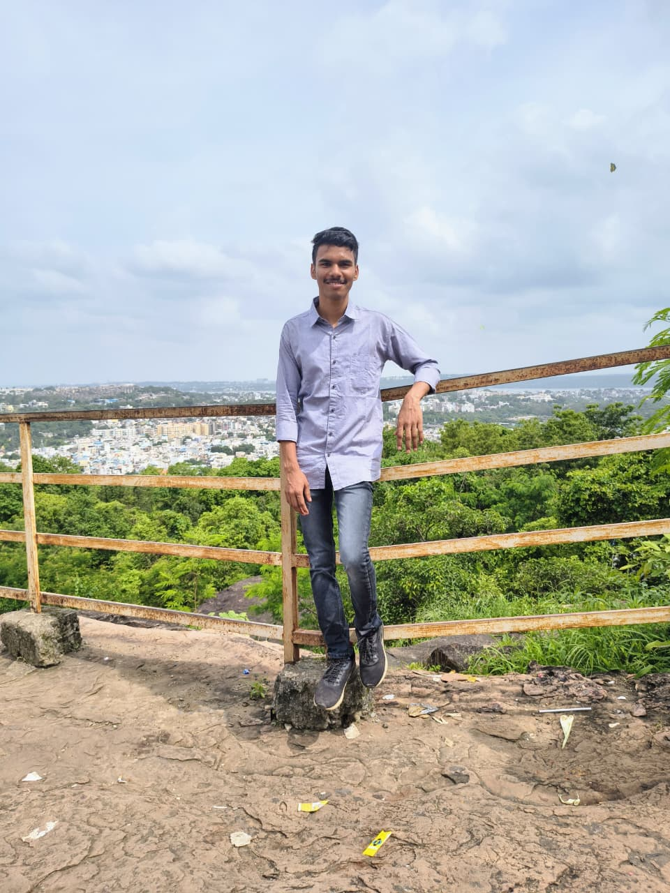

About Me

Hi, I am Ankit Anand, a BS-MS student at Indian Institute of Science Education and Research, Bhopal. I have much interest in Mathematics and aim to major in Maths. I am also the Department Representative of Mathematics for the session 2025-26. Being DR, I work as a bridge between students and faculty, ensuring smooth communication, academic support, and growth within the department.
Passionate about sports—especially athletics and long-distance running—I have proudly represented IISER Bhopal in IISM 2024 and have participated in multiple marathons. I am a Core Committee Member of the Sports Council enjoy working in roles that involve event management, logistics, and coordination. I am also a cadet of the 1 MP Naval Unit, NCC, which has strengthened my discipline, leadership, and teamwork.
I strive to contribute actively to both the academic and sports communities at IISERB, fostering participation, teamwork, and an energetic campus environment.
Skills
- Python (Pandas, Numpy)
- C (Programming Language)
- Event Management
- Teamwork
Language
- Hindi
- English
- Assamese